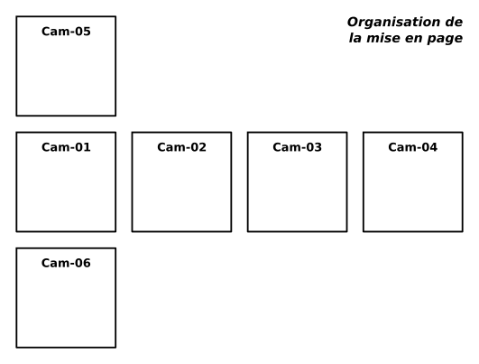
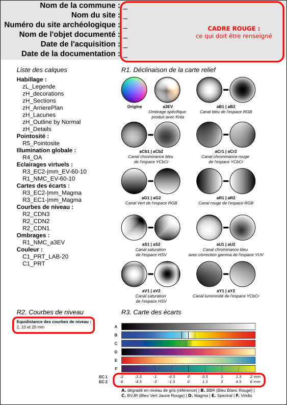

Introduction au fichier gabarit
La mise en page est réalisé à partir d'un fichier gabarit au format *.svg éditable dans Inkscape.
Le principe consiste à disposer les différentes images générées en relation : le plan avec les élévations permettent de retranscire en 2D un volume ou un espace. La description par défaut dans Blender permet de générer ce type de planche. Si des caméras sont ajoutées, il faut alors les placer manuellement en accord avec cette organisation :

A côté de ce guide de placement des images, le fichier gabarit se présente avec un cartouche contenant :
- les éléments permettant d'identifier le site et de renseigner les dates d'acquisition et de documentation,
- la liste de tous les calques présents dans le fichier gabarit,
- une légende explicitant ou renseignant les différentes couches d'information produites.

La principale étape de travail consiste à glisser les images une par une, à leur bonne place, dans le fichier gabarit Inkscape :

Cette étape de placement et d'insertion d'image dans Inkscape pourrait être automatisée grâce à un plugin écrit en Python, à partir d'un fichier *.yml que Blender auraité généré.
Vectorisation de certaines couches d'information
R2. Courbes de niveau
- Insérer l'image `Cam-##_R2_CDN-#mm` dans les calque `R2_CDN1`, `R2_CDN2` et `R2_CDN3`,
- Ouvrir le menu `vectoriser un objet matriciel`,
- Cocher "Inverser l'image", puis valider,
- Placer le résultat en arrière-plan pour sélectionner plus facilement l'image raster, et la supprimer :

Mettre en forme selon ces paramètres :
- Calque Inkscape `R2_CDN1`
- Fond : aucun
- Contour : [T: 0 ; S: 0 ; L: 40]
- Epaisseur : 0,3 mm

- Calque Inkscape `R2_CDN2`
- Fond : aucun
- Contour : [T: 0 ; S: 0 ; L: 70]
- Epaisseur : 0,4 mm
- Calque Inkscape `R2_CDN3`
- Fond : aucun
- Contour : [T: 0 ; S: 0 ; L: 90]
- Epaisseur : 0,6 mm
Résultat de la vectorisation des courbes de niveau :

zH. Lacunes
- Insérer l'image `Cam-##_zH_Masques` dans le calque `zH_Lacunes`
- Ouvrir le menu `vectoriser un objet matriciel`
- Détailler les paramètres
- Supprimer l'image raster
- Mettre en forme selon ces paramètres :
- Fond : [T: 0 ; S: 0 ; L: 100]
- Contour : [T: 0 ; S: 0 ; L: 0]
- Epaisseur : 1mm
zH. Arrière-plan
- Insérer l'image `Cam-##_zH_Masques` dans le calque `zH_Arrière-plan`
- Ouvrir le menu `vectoriser un objet matriciel`
- Détailler les paramètres
- Supprimer l'image raster
- Mettre en forme selon ces paramètres :
- Fond : [T: 0 ; S: 0 ; L: 80]
- Contour : [T: 0 ; S: 0 ; L: 0]
- Epaisseur : 1.5 mm
zH. Sections (à détailler)
- Insérer l'image `Cam-##_zH_Masques` dans le calque `zH_Sections`
- Ouvrir le menu `vectoriser un objet matriciel`
- Détailler les paramètres
- Supprimer l'image raster
- Mettre en forme selon ces paramètres :
- Fond : [T: 0 ; S: 0 ; L: 80]
- Contour : [T: 0 ; S: 0 ; L: 0]
- Epaisseur : 1.5 mm
Finaliser l'habillage
Enfin, un cadre blanc vient se superposer à tous les autres calques pour masquer les bords extérieurs de l'arrière-plan (en noir).
Il est mis en forme selon ces paramètres :
- Fond : invisible
- Contour : [T: 0 ; S: 0 ; L: 100]
- Epaisseur : 2mm